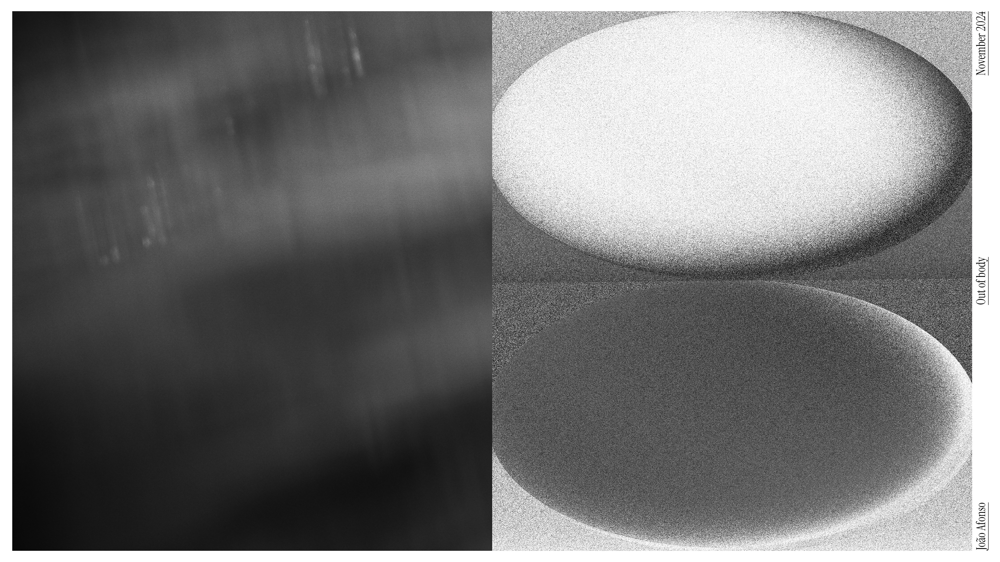
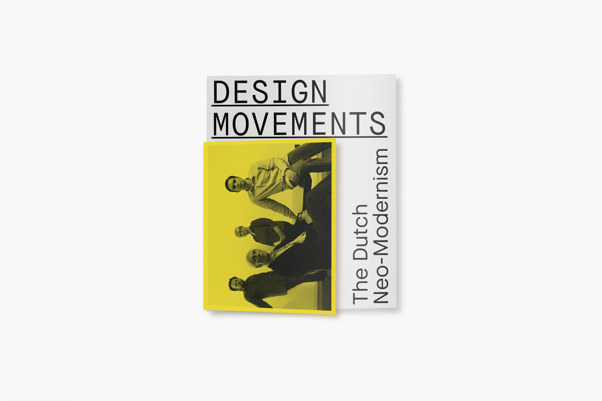

is a multidisciplinary artist and designer originally from Madeira Island, currently based in Lisbon. Working at the intersection of photography and design, his practice is guided by careful composition, visual sensitivity, and a minimalist approach.
Poster, Installation, Editorial Design, Photography, Video
Based in a vision disability called myopia that lead to so many questions related with what we need to watch and observe, I went for a digital photographic vision enhancing the lack of focus.
This individual project constitutes of the path I went through finding myself, sometimes in a natural environment and sometimes in an atopic or even dystopic environment that enabled my Crisis and a way of finding my movement. Different objects were produced in this context.

Design Movements
Editorial Design
This publication offers a deep dive into Dutch neomodernism in graphic design. Rather than focusing solely on a linear timeline, it features a collection of interviews and articles that explore the work and ideas of key figures who have shaped this influential movement over the years, like Wim Crouwel, Hard Werken, Experimental Jetset, Studio Dumbar, and Studio Thonik. Through these insights, readers are invited to understand how these designers and studios have shaped a style that combines simplicity, functionality, and creativity.

Linha Instável I
Photography, Editorial Design
At the core of human existence, there is an incessant search for stability and identity. However, this search is often marked by an unstable line, an uncertainty that accompanies and defines us. The line we trace is neither straight nor secure; it oscillates like the waves of the sea, which never reflect a fixed line, and wavers like the earth, which does not always offer the firmness we seek.
Linha Instável II
Photography, Editorial Design
This project is part of a line of continuity with the previous one, developing and deepening the conceptual and formal questions previously addressed.
How to Make a Music Festival
Editorial Design
"How to Make a Music Festival: A Designer's Perspective" is a research publication developed from interviews and internal group discussions. The project takes the form of a critical tutorial on creating a music festival, addressing the visual identity and the role of designers, as well as communication strategies and the ethical implications of the event. The publication proposes understanding the festival not only as a spectacle but also as a cultural, communicational, and political system.
Água Viva
Editorial Design
This is an editorial study project focused on the redesign of a literary work. The aim was to visually reinterpret the book, creating an experience that reinforces the narrative and the emotions conveyed by the author. The cover was produced in risograph, giving it a unique texture and tonal quality, while the interior, printed with inkjet, features a gradient of colors—pink, blue, and purple—that changes throughout the reading, reflecting the different feelings and emotions of the protagonist.